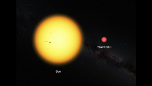

(CNN) - For the first time, researchers have discovered three potentially habitable, Earth-like worlds orbiting an ultracool dwarf star 40 light-years away in another star system, according to a study published in the journal Nature.
The ultracool dwarf star, known as TRAPPIST-1, isn't the kind of star scientists expected to be a hub for planets. It's at the end of the range for what classifies as a star: half the temperature and a tenth the mass of the sun. TRAPPIST-1 is red, barely larger than Jupiter and too dim to be seen with the naked eye or even amateur telescopes from Earth.
But these tiny stars, along with brown dwarfs, are long-lived, common in the Milky Way and represent 25-50% of stellar objects in the galaxy, said study researcher Julien de Wit, a postdoctoral associate with MIT's Department of Earth, Atmospheric and Planetary Sciences.
They were largely overlooked until researcher Michaël Gillon of the University of Liège in Belgium decided to take a risk and study the space around one of these dwarves. It paid off.
Over the course of 62 nights from September to December 2015, researchers led by Gillon used a telescope, also called TRAPPIST (transiting planets and planetesimals small telescope), to observe its starlight and changes in brightness. The team saw shadows, like little eclipses, periodically interrupting the steady pattern of starlight. Using a telescope that can detect infrared light added an advantage that visible light camera programs don't provide.
"It's like standing in front of a lamp and throwing a flea across it," said professor Adam Burgasser of the Center for Astrophysics and Space Science at the University of California San Diego. "It was only a 1% dip in light, but the specific pattern was a good sign of orbiting planets.”
The planets are about the size of Earth and given the proximity of two of them to the dwarf star, they receive about four times the amount of radiation than we do from the sun, which suggests they are in the "habitable zone." According to Burgasser, the "habitable zone," determines how close a planet is to the star that it orbits and given the temperature of the planet based on that proximity, it could have water on the surface. This core ingredient for life as we know it also suggests there could be an atmosphere and habitable regions on the planets themselves.
Less is known about the third outer planet, which receives twice the amount of radiation that Earth does, but it is potentially in the habitable zone as well. Like the moon, the researchers believe the two planets closest to the star are tidally locked. This means that the planets always face one way to the star. One side of the planet is perpetually night, while the other is always day. These results are just the beginning of a study that will continue for years. The researchers are already working on observations to see if the planets have water or methane molecules.